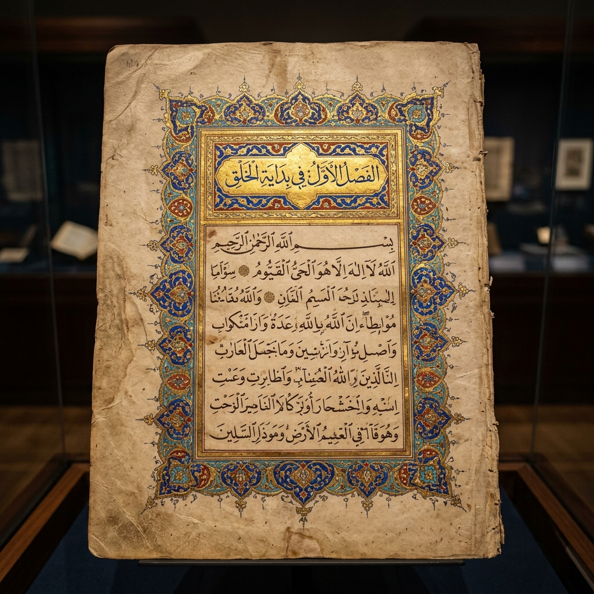

مجموعة نادرة من الفتاوى والمراسلات الفقهية تعود للقرن الثامن عشر الميلادي.

تمثل هذه المجموعة واحدة من أهم الوثائق التاريخية التي تعكس الحياة العلمية والاجتماعية في بلاد شنقيط خلال القرن الثامن عشر. تتناول الفتاوى قضايا فقهية تتعلق بالمعاملات التجارية، النزاعات حول الأراضي، والفصل في المسائل المتعلقة بالزراعة والرعي في الواحات.
تم ترميم هذه المخطوطة بعناية فائقة في مختبرات المندوبية العامة للوثائق الوطنية في عام 2024 لضمان حفظها للأجيال القادمة، وتتاح الآن للباحثين والمهتمين بالدراسات التاريخية والفقهية.